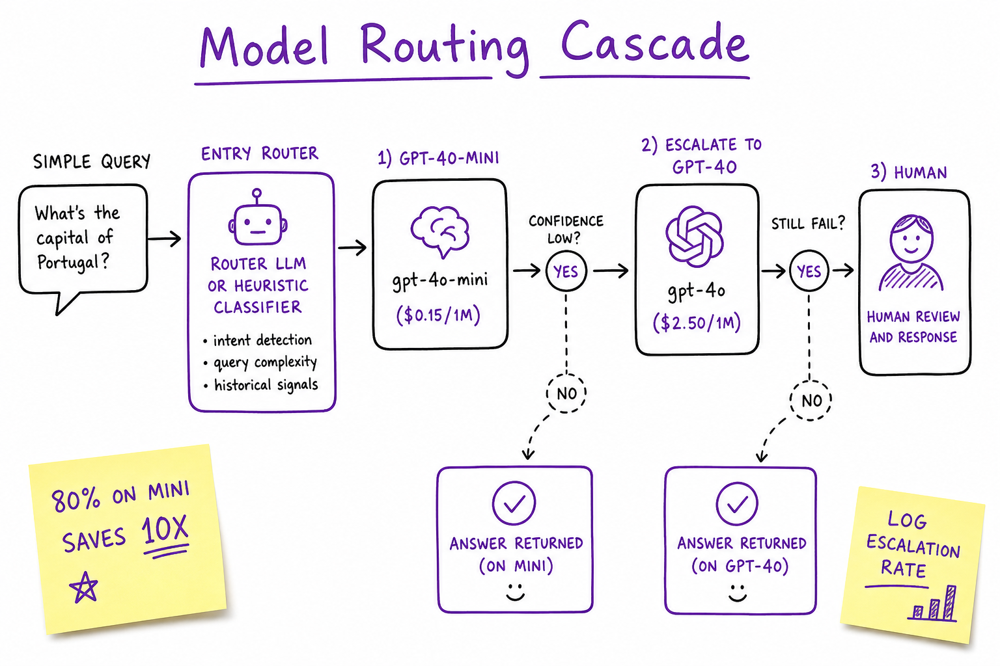
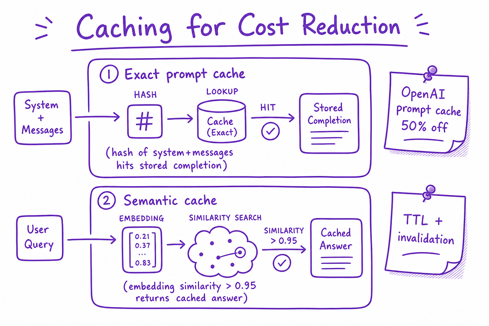

Cost & Latency Tradeoffs // Fundamentals
Token economics, TTFT vs tokens/sec, model routing cascades, caching, quantization, and batch APIs — how to hit latency SLOs without bankrupting the feature.

Quality, cost, and latency form a triangle: model routing, prompt compression, caching, and quantization move you along the edges.
01 — What & Why
LLM features bill per token and wait per GPU second. TTFT (time-to-first-token) drives perceived speed; tokens/sec drives total wait. Cost scales with model tier, context length, and traffic.
Semantic cache systems: Semantic Cache.
01a — Core Concepts
| Term | Definition | Gotcha |
|---|---|---|
| TTFT | Time until first streamed token | Prefill-dominated |
| Tokens/sec | Decode throughput | Memory bandwidth bound |
| $/1M tokens | Input + output priced separately | Output often 2-4× input |
| Model cascade | Cheap model first, escalate if needed | Log escalation rate |
| Batch API | 50% discount, 24h SLA | Offline jobs only |
01b — API Surface
# Cost estimate prompt_toks = 2000 completion_toks = 500 price_in, price_out = 0.15, 0.60 # gpt-4o-mini per 1M cost = (prompt_toks * price_in + completion_toks * price_out) / 1e6
02 — When to Use / When NOT
| Tactic | Use | Skip |
|---|---|---|
| gpt-4o-mini router | High volume mixed queries | All queries need frontier |
| Prompt cache | Repeated system prompts | Unique prompts every call |
| INT4 quant | Self-host 70B | API-only small team |
| Batch API | Nightly summarization | Interactive chat |
03 — Architecture
Request -> Router (mini vs frontier) -> [Cache hit?] -> LLM
-> Stream SSE -> usage{prompt,completion}_tokens -> billing04 — Deep Dive: Token Pricing
Example (order-of-magnitude): gpt-4o-mini $0.15/$0.60 per 1M in/out; gpt-4o ~$2.50/$10. Long system prompts + RAG chunks dominate input cost. Always set max_tokens.
05 — Deep Dive: Latency Breakdown
Prefill: parallel over prompt → TTFT. Decode: serial tokens → total time. See Context Window & KV Cache for memory effects. Streaming improves UX without reducing total time.
06 — Deep Dive: Model Routing

Cascade: classify query complexity, route 80% to mini model, escalate hard queries to frontier.
Router: heuristic (token length, keywords) or small classifier LLM. Track quality regression on escalated vs non-escalated buckets.
07 — Deep Dive: Caching

Exact prompt hash cache and semantic embedding cache for near-duplicate queries.
OpenAI automatic prompt caching on repeated prefixes. Semantic cache: embed query, return cached answer if similarity >0.95 with TTL.
08 — Deep Dive: Quantization & Self-Host
AWQ/GPTQ INT4 fits 70B on 2×80GB. Trade ~1-3% quality for 2× throughput. See Model Serving (vLLM) for serving economics break-even vs API.
09 — Production & Ops
- Dashboard: cost/request, p50/p99 TTFT, tokens/request
- Budget alerts per feature flag
- A/B quality on routed tiers
- Batch offline workloads
10 — Where It Shows Up
11 — Common Pitfalls
- No max_tokens cap
- Frontier model for all traffic
- Ignoring input token cost of RAG
- Cache without invalidation on KB update
- Optimizing tokens/sec but not TTFT